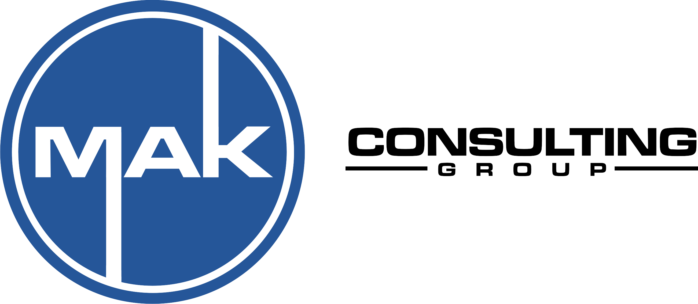
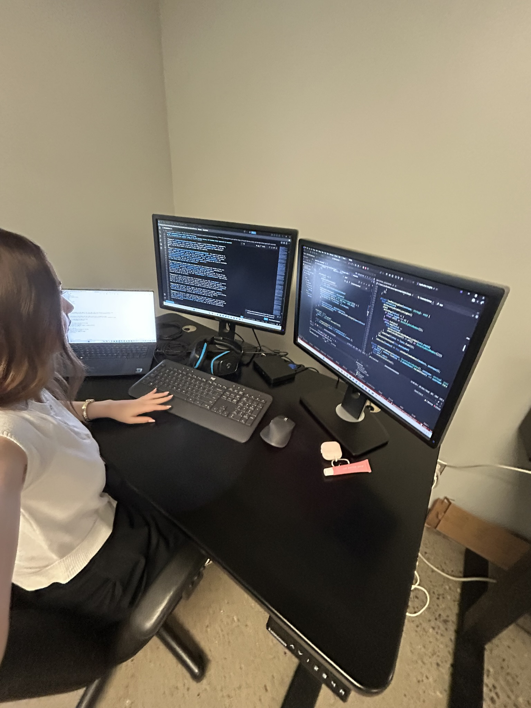

WORK TERM 01
Work Term Report
Software Engineering Co-op
Introduction
This work term, I had the opportunity to join MAK Consulting Group as a Programmer working on MAKAI, a Manufacturing Execution System (MES). This was my first co-op work term and my first experience working in a professional software development environment. I was excited to gain experience in the software industry and apply some of the programming knowledge I had developed through my courses at the University of Guelph.
I came into the work term with no prior experience using Angular. At the beginning of the term, I had to learn how the MAKAI application was structured and understand how the different parts of the system worked together. This included learning about the existing codebase, development practices, APIs, databases, and the tools used by the development team. Although there was a lot to learn, working directly with the project allowed me to develop my technical skills while gaining experience with how software is developed in a professional environment.
Throughout the four-month work term, I contributed to a variety of features and bug fixes within the MAKAI system. My work involved both learning new technologies and applying them to real work items. As I became more familiar with the application I became more comfortable making changes independently, troubleshooting issues, and asking questions when I needed clarification. I also gained experience working with other developers through daily meetings, code reviews, and discussions about different ways to approach a problem.
One of the most valuable parts of this work term was being able to see how the concepts I have learned in school are used in an actual software development environment. I was able to improve my understanding of programming, debugging, web development, databases, and teamwork while also learning technologies and development practices that I had not previously used. The experience also helped me understand the importance of being able to learn independently, communicate when I needed help, and adapt to an existing code rather than starting a project from scratch.
This report outlines my experience during the work term, including information about my employer, the learning goals I established at the beginning of the term, my responsibilities and work completed, and the skills I developed throughout the experience. that have contributed to my development as a software engineering student.
Information about the Employer
MAK Consulting Group is a software and automation development company based in Ontario. The company has two offices, one in Brantford and a second office in Burlington, which is where I worked during my co-op term. Everyone at MAK works from home Monday, Wednesday, Friday, and from either office Tuesday and Thursday, so my Co-op was hybrid. MAK works with manufacturing companies to develop software and automation solutions that improve the way their production processes are managed and monitored.
One of the main areas of the company is Manufacturing Execution Systems (MES). An MES connects different parts of a manufacturing operation, including production, quality, inventory, and equipment information. This allows manufacturers to collect and monitor information about their operations in real time. By having this information available in one system, companies can better understand their production processes and identify areas where improvements can be made.

Heading in to the office on one of my in-person days
During my work term, I worked on MAKAI, MAK's new Manufacturing Execution System. MAKAI is being developed as a modern MES platform that brings manufacturing information and processes together in one application. The system is built using technologies such as Angular, C#, and Microsoft SQL, and includes features for monitoring equipment, managing production information, and tracking events and actions.
Goals
At the beginning of my work term, I identified five learning goals that I wanted to focus on throughout my co-op experience. Since this was my first professional software development position, I wanted my goals to focus on both technical and professional skills. I worked toward these goals throughout the term by completing work items, participating in team meetings, reviewing code, asking questions, and learning from feedback. The following goals describe what I wanted to achieve, the actions I planned to take, how I measured my progress, and my reflection on how I developed throughout the work term.
Technological Literacy
Goal
Develop skills in Angular and improve my understanding of front-end web development practices during my co-op term.
Action Plan
Complete assigned work items and ask questions when needed. Review Angular tutorials outside of work for practice with components, services, routing and binding. Apply feedback from team members to improve code and take notes to prevent same mistakes/questions.
Measure of Success
Successfully complete work items with less assistance over time. Demonstrate ability to independently build or modify Angular projects.
Reflection
Throughout my work term, I improved my understanding and knowledge of Angular and front end development. At the beginning of the term, I didn't know what Angular was and needed assistance understanding how components, services, routing, forms and API calls worked in the project. As I completed more work items and grew familiar with the application, I became more comfortable navigating the project and making changes. I've learned how to use and understand the existing code and how to build off of it. Pull request reviews and feedback from my team members have helped me to be able to identify mistakes in mine and others code and improve the way I write my code. I am now able to take on bigger work items as I have a better understanding of how the different elements of a front end project work together.
Oral Communication
Goal
Improve my abilities to communicate technical updates and collaborate effectively during team meetings.
Action Plan
Participate in daily stand-up meetings. Clearly explain current work item tasks, progress made, potential blockers and next steps. Use professional and clear communication when discussing technical topics. Ask clarifying questions when tasks are unclear or confused.
Measure of Success
Confidently contribute during daily meetings and share what I'm currently working on using proper technical language.
Reflection
During the work term, I improved my ability to communicate technical information and discuss the project with my team in the daily standup meetings. At the beginning of the term, I found it difficult to explain issues I was having, describe what I was working on, and understand what my team was talking about. This was because I was still learning the project, the code and Angular. By talking with my team everyday and asking what things meant, I became comfortable explaining my current work, the progress I made, what I planned to work on next and any blockers I encountered. I also learned that if I didn't know the proper technical language to describe something, I could explain in simple terms and show my screen and after they understood the issue, ask how to properly describe it. When I was unsure of a requirement or implementation, I was able to ask clarifying questions. Over the work term I improved my ability to use correct technical terms when discussing Angular databases, APIs, and components, and felt more confident in technical conversations with my team.
Teamwork
Goal
Strengthen my teamwork skills by collaborating effectively with team members on shared programming tasks.
Action Plan
Support teammates by providing feedback to their pull requests. Participate in discussions and collaboratively problem solve. Being open to feedback and suggestions to improve my work.
Measure of Success
Build positive work relationships with team members. Successfully contribute to the team project and share suggestions I find when reviewing PR's.
Reflection
Throughout the work term, I strengthen my teamworking skills by collaborating with my team members on shared programming tasks. I took part in discussions about ways of implementation, asked for feedback, and reviewed other peoples work. Reviewing other peoples pull requests and work items helped me understand how they approached a task or problem. Also by looking at the feedback on my own pull requests, I became more aware of my code quality and what to look for in other peoples PR's. Overtime I became better at applying suggestions and had better consistency of the code I was writing. Working with the team also taught me the importance of communicating when I was experiencing issues, or when I didn't understand something in another person's work. Over the term I was able to contribute suggestions or ask questions during code reviews and implementation discussions while learning from my experienced team members.
Problem Solving
Goal
Improve my problem-solving skills when debugging/creating applications and working with Angular and Microsoft SQL.
Action Plan
Analyze errors carefully before asking for help by using console logs and debugging tools to investigate. Break large technical tasks into smaller more manageable steps to work through. Document solutions or debugging tips to recurring issues for future reference.
Measure of Success
Over the work term be able to solve technical issues/tasks more independently. Reduce time spent troubleshooting repeated problems. Demonstrate logical approaches to debugging and development challenges.
Reflection
Throughout the work term, I significantly improved my problem solving skills because I experienced unknown bugs, code, API issues and application behavior. I learned to first look in to the problem myself using console logs, browser developer tools, error messages, and tracing back the issue. I eventually became more comfortable breaking down tasks into smaller pieces and developing and testing each part separately. I had to learn to determine where an issue was coming from (frontend or backend), this helped me debug in a logical way instead of getting overwhelmed and trying to change multiple things at once. I also began to write notes on issues I was experiencing as a way to track solutions and apply knowledge from previous situations. As the term went on, I was able to troubleshoot more issues independently before asking a team member for help.
Personal Organization / Time Management
Goal
Improve my time management and organizational skill when planning how to approach a work item.
Action Plan
Track a work items progress by making a note/schedule with the subtasks needed to complete. Set daily goals before each workday. Communicate early if help is needed and communicate when the end of a work item's development is approaching.
Measure of Success
Complete work items on schedule consistently. Demonstrate improved ability to manage a work item independently.
Reflection
Throughout the work term, I improved the way I organized and managed my time when working on work items. I learned that breaking tasks into smaller parts made it easier to understand everything I needed to complete and helped me track my progress. For large work items, I would identify the main pieces that needed to be completed and then as I began working on each piece, I would write down any subtasks that I needed to do to complete it. As I worked through my list, I would cross out subtasks until the piece was completed, and I would note anything that wasn't apart of that pieces that needed to be done (testing/parts missing or not working as intended). I became better at estimating how long a task may take because of this. At the beginning tasks took longer then anticipated as I experienced unfamiliar bugs or tasks, but by documenting these made it easier for future tasks since I could look back on solutions/implementation. I am now more confident in managing and tracking tasks.
Job Description
This work term was my first co-op experience, and I was excited to gain hands-on experience in the field of software development. I worked as a Programmer on MAKAI, my position focused on developing, modifying, and testing features within the application, as well as investigating and fixing bugs. Since MAKAI is an active project, many of the tasks I worked on involved adding new functionality or improving existing features based on the needs of the development team and the application.
Areas I worked on
- Statistical Process Control (SPC)
- Action Items
- Overall Equipment Effectiveness (OEE)
- Dashboard Cards
- Procedure Execution

Working on MAKAI during my co-op term
Frontend Development
A large part of my work involved developing features on the frontend using Angular and TypeScript. I created and modified Angular components, worked with forms and data binding, and used PrimeNG components to build and update parts of the user interface. I also worked with services and API calls to retrieve and update information in the application. Since the frontend communicates with the backend through APIs, I had to understand how the different parts of the application connected together when making changes.
Backend Development
I also gained experience working on the backend of the application using C#. This included working with existing backend logic, creating and modifying API endpoints, and investigating issues with data being sent between the frontend and backend. I worked with Microsoft SQL to query and understand data stored in the database. Working across both the frontend and backend helped me understand how a change made in one part of an application can affect other parts of the system.
Debugging & Troubleshooting
Debugging and troubleshooting were also a major part of my responsibilities. When I encountered an issue, I learned to investigate the problem before asking for assistance. I used browser developer tools, console logs, breakpoints, error messages, and API responses to determine where an issue was coming from. I also had to learn how to distinguish between frontend, backend, and database issues. As I became more familiar with the codebase, I became more comfortable tracing problems through multiple parts of the application and testing possible solutions.
Version Control & Collaboration
I also worked as part of the development team using Azure DevOps and Git. Azure DevOps was used to manage work items and track the progress of tasks, while Git was used to manage changes to the codebase. I created branches for my work, made commits as I completed changes, and created pull requests for my team members to review. I also reviewed other developers' pull requests, which helped me learn from how they approached different problems and understand the importance of maintaining consistent and readable code.
Throughout the work term, I became increasingly independent with my work. At the beginning of the term, I needed more assistance understanding the project structure and determining how to approach unfamiliar tasks. As I gained experience I was able to take on larger work items and troubleshoot more problems on my own. This allowed me to apply the skills I had developed throughout the term while also learning new technologies and practices that I had not used in school.
Overall, my responsibilities gave me experience with many different parts of the software development process. This experience helped me better understand what is involved in developing and maintaining a software application as part of a development team.
Conclusion
Overall, my first co-op work term at MAK Consulting Group was a valuable learning experience that allowed me to apply what I have learned in school while developing new technical and professional skills. Over the four months, I became more comfortable navigating the MAKAI application, understanding how its different parts worked together, and completing work items with less assistance. One of the biggest areas of growth for me was my technical knowledge. I gained practical experience while working on real features and bugs. I also learned how important it is to understand existing code before making changes and how to use debugging tools to investigate problems.
In addition to my technical skills, I also improved my communication, teamwork, problem solving, and organization. Participating in daily stand-up meetings helped me become more comfortable discussing technical topics and explaining the work I was doing. Code reviews and working with other developers taught me how to give and receive feedback and showed me different ways of approaching programming problems. I also became better at breaking larger tasks into smaller steps and investigating issues independently before asking for help.
This work term also gave me a better understanding of what it is like to work as part of a software development team. I learned that software development involves more than writing code. It also requires communication, planning, testing, debugging, reviewing code, learning from mistakes, and being able to work with a team. Being able to experience these parts of software development has helped me understand the skills I need to continue developing throughout my degree and future career.
Looking back at the goals I set at the beginning of the term, I feel that I made significant progress in each of them. I became more confident with technology, communication, teamwork, problem solving, and managing my work. Although there are still many areas I want to improve, this experience gave me a better understanding of software development, more confidence in my abilities, and a clearer idea of the type of skills I want to continue developing as I progress through my software engineering degree.
Acknowledgements
I would like to thank my supervisor, Tim Weiler, for his guidance and support throughout my work term. He took the time to answer my questions, walk me through unknown areas, and give me feedback that helped me grow as a developer. I appreciated his patience, especially early in the term when I was still learning Angular and getting comfortable with the MAKAI application.
I would also like to thank the rest of the development team at MAK Consulting Group, including Hope, Mathew, and Jonathan, for welcoming me onto the team and taking the time to review my work, answer questions, and share their knowledge. Their willingness to explain concepts, offer feedback during code reviews, and include me in discussions made it much easier to learn and contribute confidently. This work term would not have been as valuable of a learning experience without their support.